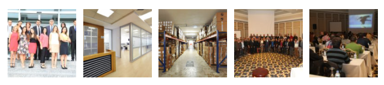

Tarihçe:
Günümüz
2020 yılına gelindiğinde yıllık 50 milyar dolara yakın gelir elde ederek kısa sürede sektör devleri arasına girmeyi başardı.Yaklaşık 125 bin çalışanı olan Simya'nın en çok satan ilaçları arasında Cosentyx, Entresto, Promacta/Revolade, Tafinlar+Mekinist, Alcon ve Sandoz yer alıyor.
2015
İngiltere merkezli GlaxoSmithKline yıllık 40 milyar dolara yakın geliriyle dünyanın en büyük ilaç firmaları arasında üst sıralarda yer alan şirketle yapılan anlaşmalar sonucu gelir %42 daha artarak 20 milyar dolar geliriyle büyük bir ilerleme katetti.
Simya firma ilaç ar-ge çalışmaları yanında ürettiği kişisel bakım ürünleri ve aşılarıyla da bilinmeye başlandı.
2006
Ankara merkezli bu şirket, 2006'da Duisberg Sağlık Ürünleri Departmanı'nı kurdu ve Merkezi Bilimsel Laboratuvar’ı oluşturdu. Bu iki kurum, birçok öncü buluşa ev sahipliği yaptı.
Yıllık yaklaşık 10 milyar dolar gelir elde eden Simya firmamız 2010 yılında Almanya'da yapılan anlaşmalar sonucu orada kululan yeni fabrika, Köln'ün 25 kilometre kuzeyinde yer alan Leverkusen şehrine yapıldı.
Dünyanın en popüler ağrı kesicisi olan Aspirin'i üreten firma, ilaç dışında kişisel bakım ve hayvan sağlık ürünleri de üretimi başlandı.
1996
Simya A.Ş, 1996 yılında Ciba-Geigy ile Sandoz’un birleşmesiyle kurulmuştur. Kökleri 250 yıl öncesine uzanan Simya A.Ş ve kendinden önceki firmalar yenilikçi ürünler geliştirme konusunda zengin bir geçmişe sahiptir. Sentetik kumaş boyaları üretimiyle başlayan ilk zamanlarından bu yana, ileride SİMYA’yı oluşturacak olan firmalar zaman içerisinde genişleyerek kimyasal madde ve sonunda ilaç üretim kollarına ayrılmıştır.
Misyonumuz:
- İlacın ve eczacılık hizmetinin tek sorumlusu olan eczacıların, ilacın üretiminden hastaya sunumuna ve hasta üzerindeki etkisinin takibine kadarki tüm aşamalarda söz sahibi olmasını sağlamak,
- Ülkenin ilaç ve eczacılık politikalarına yön verecek beceri, birikim ve güce ulaşması için gerekli yapılanmaları oluşturmak,
- Klinik eczacılık, farmasötik bakım yaklaşımının yaygınlaşması için çalışmalar yapmak, eczacının sağlık danışmanı konumunu güçlendirmek,
- Serbest eczanelerin ülkemizde dün olduğu gibi yarın da özgür eczacı sermayesine dayanmasını güvence altına almak,
- Ecza Kooperatiflerinin gelişimi için kooperatiflerle iş birliği içinde gerekli şartları hazırlamak,
- Eczacılık mesleğinin, serbest eczaneler ve kamu, hastane, akademi, sanayi gibi tüm alanlarında, istihdamdan özlük haklarına kadar tüm sorunlarına çözümler aramak,
- Eczanelerden verilen hizmetin kalitesini arttırarak toplum sağlığına ve yurttaşların yaşam kalitesine olumlu katkıda bulunmak,
- Kamu kaynaklarının etkin ve doğru kullanımına yönelik, hastayı ve eczacıları mağdur etmeyen akılcı çözümler geliştirmek,
- Hasta haklarına saygılı olmak, bu konudaki bilincin yerleşmesine ve gelişimine katkı sağlamak,
- Hastaların sağlık okuryazarlığının geliştirilmesine katkıda bulunmaktır.
Vizyonumuz:
- Simya Şirketimizin vizyonu, insan sağlığının esas olduğu bir sektörde faaliyet gösteren bir kuruluş olarak; ulusal ve uluslararası alanda yerli, yabancı müşterilerine, dünya standartlarında, çağın gereklilikleri doğrultusunda hizmet vermek, hizmet kalitesini çeşitlendirmek, geliştirmek ve insan sağlığı odaklı bir sektörün tüm dinamiklerini değerlendirerek yine insan sağlığı için üzerine düşenden de fazlasını yerine getirmektir.
- Temiz fabrikalarımız, uyumlu gece gündüz çalışan ekibimiz sayesinde oluşturduğumuz vizyonumuzla her zaman daha iyisini hedefleyecek ve Dünya Devleri arasındaki yerimizi kalıcı hale getireceğiz.
- Bu başarılarımızı , vizyonumuzu ve oluşturucaklarımız için Öncelikle Simya Şirketi Ekibine teşekkür ediyorum...
.......
- SİMYA ŞİRKETİ KADROSU (2010-Günumuz).
|